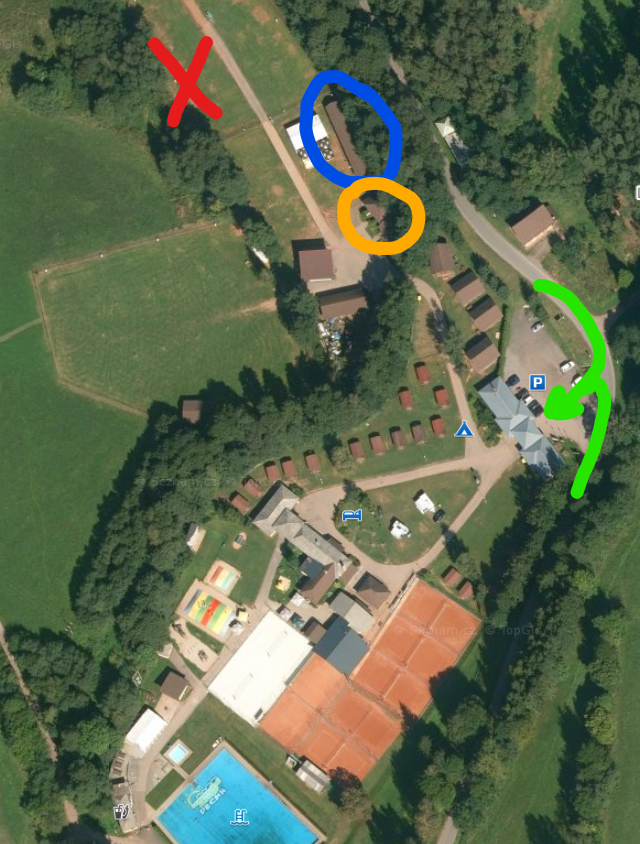
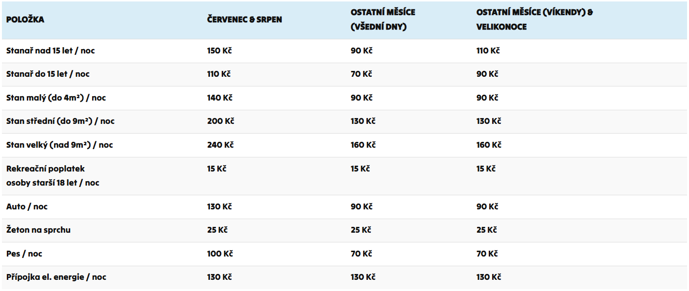

Vše co musíš o Pecce vědět!
Většinu užitečných a obecných informací najdete na oficiálním webu kempu: https://www.kemppecka.cz/
Nicméně jsou i věci, které se tam nedočtete!
Na mapičce níže jsou zvýrazněny důležité body.
Půjdeme postupně...

Zelená šipka je příjezd do areálu.
Tam bude brána a recepce. Zaparkujete na postranním parkovišti a buď se půjdete dovnitř nahlásit, že jste z „Nohejbalového oddílu Semily“, nebo dáte před příjezdem echo a bude o vás postaráno.
V případě, že v autě máte věci, ale nepotřebujete ho v areálu, poprosíte, jestli by nešlo projet a vyhodit věci. Po vyložení si z areálu vyjedete a můžete vůz nechat před recepcí na parkovišti.
V případě, že auto máte jako bydlení, či ho chcete mít u stanu, pak samozřejmě budete zpoplatněni a dostanete k tomu kartičku, se kterou jste schopni se dostat dovnitř a ven.
Oranžový kruh značí umývárnu. Jsou tam umyvadla, záchody, ale i sprchy.
Sprchy jsou na žetonky. Nutno koupit, dokud má recepce otevřeno.
Červený kříž je místo, kde tradičně rozkládáme stany a parkujeme vozy.
Jedná se o strategické místo, kde je v blízkosti důležité zázemí a třeba i přípojka na elektřinu, kam si můžeme píchnout telefon, notebook atd. Nicméně doporučuju mít powerbanky a nenechávat tam telefony jen tak ležet.
Na recepci se vás budou ptát, jestli chcete elektrickou přípojku nebo ne. Tbh jsem to nikdy neplatil, nevím jak to funguje a elektřina tam je i tak. Tuto záhadu nechám pro jiné...
Modrý kruh je velmi důležité místo.
Zde se odehrávají noční aktivity, obědvání, popíjení, grilování, ale také se zde nachází ledničky, plotýnka na vaření a další zásuvky.
Ledničky jsou velké průmyslové a můžeme je využívat. Plotýnka je indukční, takže doporučuju vzít si vlastní indukční pánvičku nebo hrnec.
Altánek má několik stolů, lavičky a dostatek prostoru. Úložný prostor na věci, které nepatří do ledničky, tam ale moc není. Ty budete nechávat nejspíš v autě/stanu, nebo položené na vrchu lednice.
Na zbytku mapky vidíme, kde jsou kurty, bazén atd.
Vedle kurtů se nachází občerstvení, kde se dá koupit pivo/limo, něco k snědku, ale i třeba točená zmrzka.
Pokud chcete studovat rozložení ještě víc, doporučuju interaktivní mapu kempu: mapa kempu
Ceník
Aktuální ceny najdete níže v tabulce. Pro jistotu doporučuju ověřit i aktuální ceník na webu kempu.
